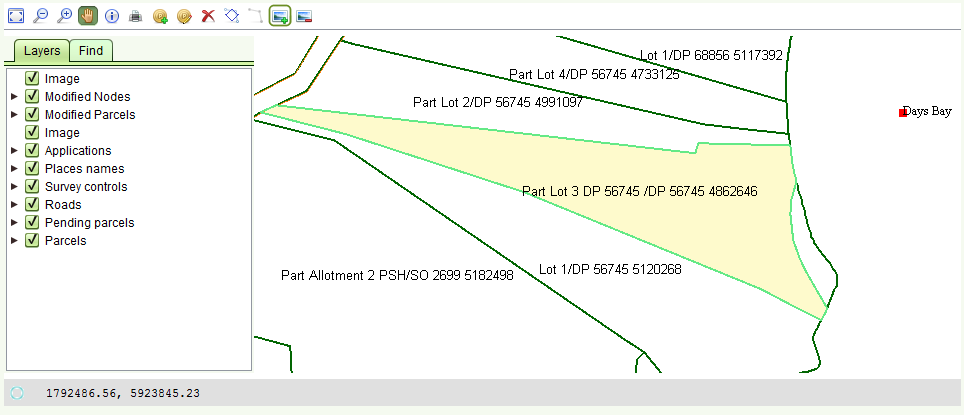

تغيير الحدود
تستطيع تغيير الحدود بالكامل لقطعة جديدة (خدمة مساحة جديدة) و لمساحة قطعة موجودة (خدمة اعادة تعريف المساحة), في الواقع الاداة مصصمة لتغيير الحدود بالكامل بدلا من تغيير نقاط محددة
اختر الحدود التي تريد تغييرها باستخدام اداة اختيار حدود للتغيير
- وذلك بعد تكبير القطعة المراد تغييرها
- اختر نقطة (مع عقارب الساعة ) كنقطة نهاية للحدود المراد تغييرها (قد تكون نقطة جديدة او موجودة)
سوف يتم اظهار النقاط باللون الاخضر فوق الحدود .القطعة من الحدود التي سيتم تغييرها سوف تظهر كخط باللون الاحمر بين 1-2

الان اختر اداة تغيير الحدود 
- انقر على نقطة البداية للحدود المراد تغييرها
- انقر على النقاط التي تشكل جزءا من خط الحدود الجديدة
- انقر نقرة مزدوجة على النقطة التي تشكل نهاية الحدود المراد تغييرها
سوف يتم اظهار الحدود الجديدة كخط اخضر فاتح, تاركة الخط الاخضر الداكن السابق
وهذا يسمح بمقارنة الحدود الجديدة بالسابقة. القطع ذات العلاقة سيتم وضعها في حالة "قيد الانتظار"

تستطيع تغيير الحدود عدد لا محدود من المرات, كذلك تستطيع ازالة القطعة الجديدة في حالة ارتكاب خطأ خلال عملية الانشاء وذلك حتى الحفظ النهائي
اضافة صورة على تغيير مساحة او اعادة تعريف مساحة
تستطيع اضافة صورة مباشرة على خارطة من خدمة تغيير المساحة او اعادة تعريف المساحة وذلك باستخدام
 اداة اضافة صورة مباشرة
والمقصود هنا اضافة صور صغير توضح الاتجاهات على الخارطة, على سبيل المثال لرسم حدود جديدة وليس لتحميل صور جوية
اداة اضافة صورة مباشرة
والمقصود هنا اضافة صور صغير توضح الاتجاهات على الخارطة, على سبيل المثال لرسم حدود جديدة وليس لتحميل صور جوية
- انقر لتعريف الزاوية اليسار من الاسفل للصورة (سوف يتم وضع اشارة اكس مكان النقرة )
- انقر لتعريف الزاوية اليمنة من الاعلى للصورة (سوف يتم وضع اشارة اكس مكان النقرة )
- اختر صورة (بصيغة jpg, jpeg, png, tif) من خلال شاشة تحميل الصورة حيث يتم فتح الصورة
- اختر اول نقطة في الصورة بالنقر (سوف يتم وضع اشارة اكس مكان النقرة )
- اختر ثاني نقطة في الصورة بالنقر (سوف يتم وضع اشارة اكس مكان النقرة )
- اختر موافق
سوف يتم عرض الصورة على الخارطة مباشرة (لا حاجة لعملية الاسناد الجيوغرافي )
تستطيع ازالة الصورة باستخدام ازالة صورة مضافة 
هناك طبقة تسمى "الصورة" في صفحة الطبقات تستخدم لاطفاء او تفعيل الصورة
انظر ايضا